Every post is 1080 × 1350 (Instagram 4:5). Download one at a time or grab everything in a zip. Each caption has a copy button.
14 posts
Correlation, Not Causation
14 search twins. Wild conclusions, real charts.
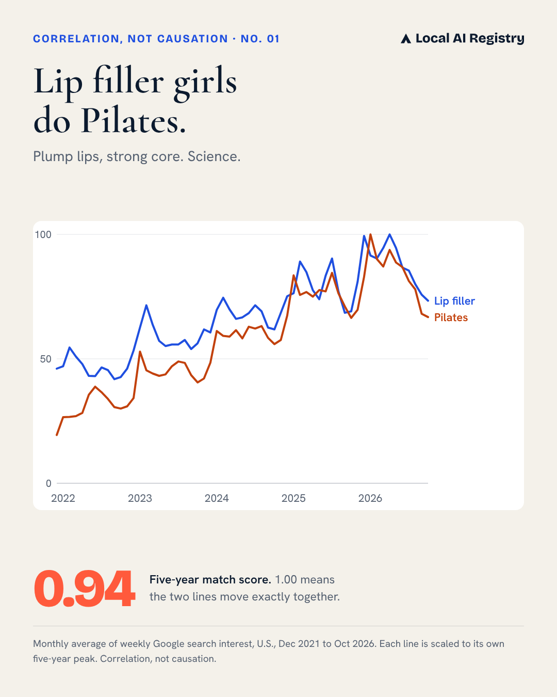
Correlation, Not Causation · No. 01
Caption
The lip filler girlies are on the reformer. Searches for lip filler and Pilates have moved together for five straight years (0.94 match). Is that a lifestyle or a coincidence? Yes. Correlation, not causation.
Tag your Pilates bestie.
Correlation, Not Causation · No. 02
Caption
Turns out the glow comes with a can. Microneedling searches and Monster Energy searches have tracked each other for five years (0.92 match). We are not doctors. Correlation, not causation.
What's your go-to energy drink?
Correlation, Not Causation · No. 03
Caption
You know the move. Nails done, boba in hand. “Nail salon near me” and “boba near me” have been nearly the same chart for five years (0.90 match). Correlation, not causation, but come on.
What's your boba order?
Correlation, Not Causation · No. 04
Caption
A new haircut deserves a slice. “Hair salon near me” and “pizza near me” searches have moved together for five years (0.85 match). Correlation, not causation. Pizza is still the right call.
Pizza topping that ends friendships?
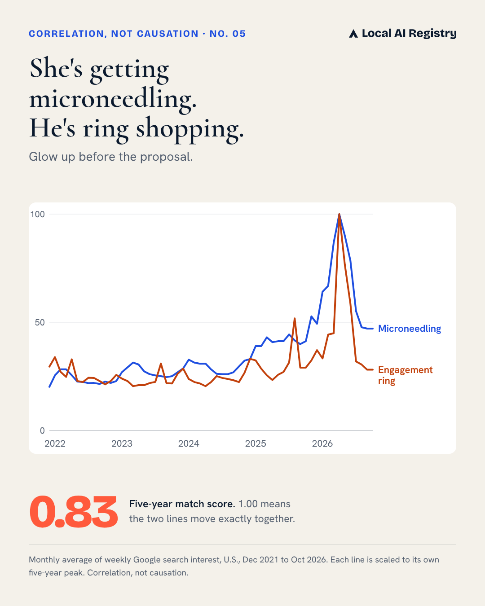
Correlation, Not Causation · No. 05
Caption
Somebody's getting ready for photos. Microneedling searches and engagement ring searches have tracked each other for five years (0.83 match). Coincidence? Probably. Cute? Definitely. Correlation, not causation.
Tag someone who should be ring shopping.
Correlation, Not Causation · No. 06
Caption
Brave girls get dessert. “Brazilian wax” and “ice cream near me” rise and fall together year after year (0.81 match). Mostly because of summer. Mostly. Correlation, not causation.
Tag your post-wax ice cream buddy.
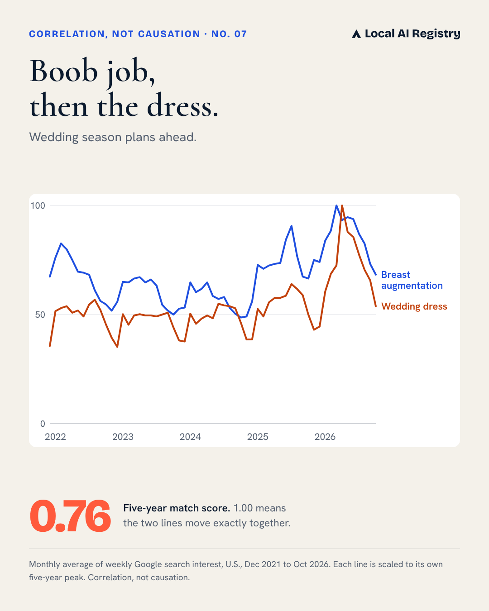
Correlation, Not Causation · No. 07
Caption
The dress has to fit somehow. Breast augmentation searches and wedding dress searches have moved together for five years (0.76 match). We are not saying brides do this. We are saying the chart does. Correlation, not causation.
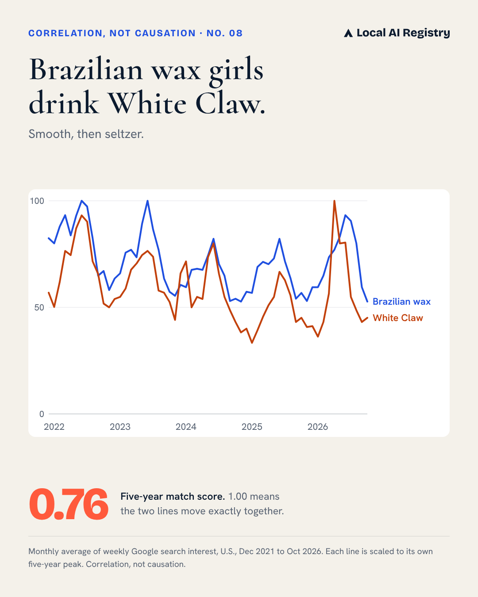
Correlation, Not Causation · No. 08
Caption
Summer starter pack, apparently. “Brazilian wax” and White Claw searches have tracked each other for five years (0.76 match). There are no laws when you're drinking Claws. Correlation, not causation.
Favorite White Claw flavor?
Correlation, Not Causation · No. 09
Caption
We have questions too. Liposuction searches and “boba near me” searches have moved together for five years (0.75 match). The math says yes. Your nutritionist says no. Correlation, not causation.
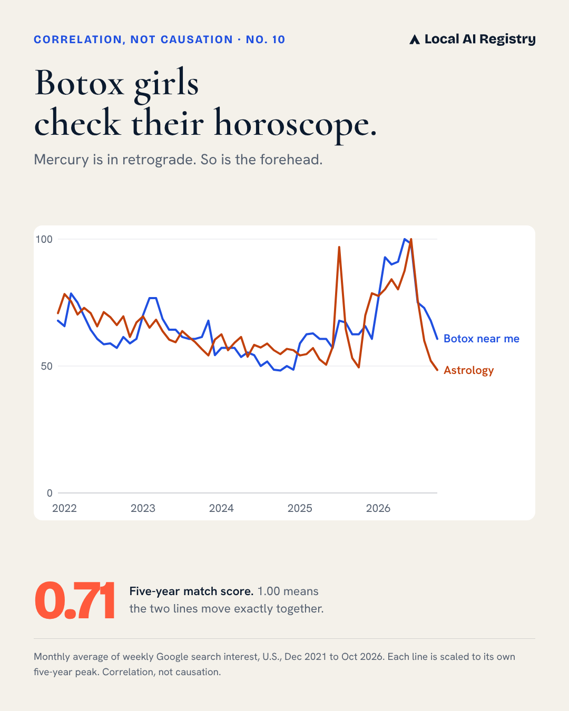
Correlation, Not Causation · No. 10
Caption
It's written in the stars. “Botox near me” and astrology searches have tracked each other for five years (0.71 match). Booking Botox around your moon sign? We support it. Correlation, not causation.
Drop your sign.
Correlation, Not Causation · No. 11
Caption
Tummy tuck searches and “sushi near me” searches have moved together for five years (0.70 match). Clean eating before the big day? Or just a spicy tuna roll? Correlation, not causation.
Sushi order go.
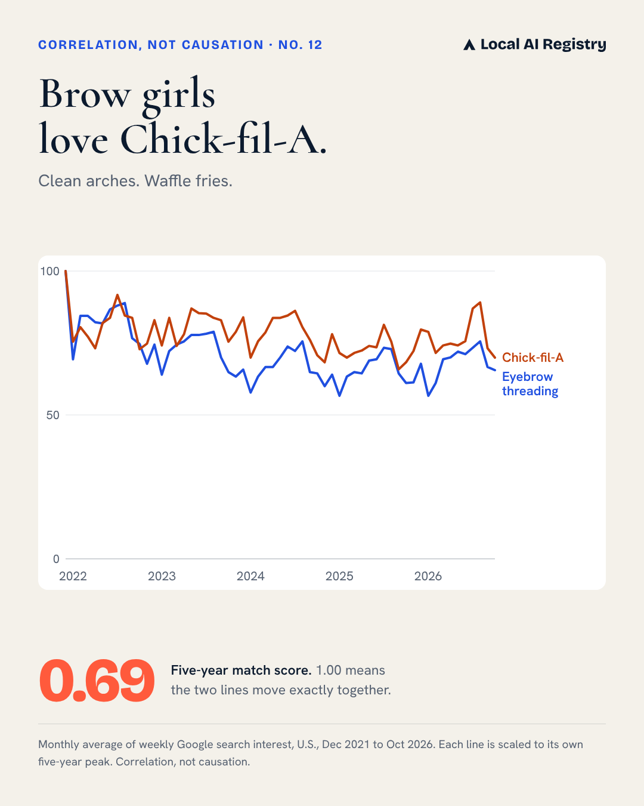
Correlation, Not Causation · No. 12
Caption
Threaded brows, then the drive-thru. Eyebrow threading and Chick-fil-A searches have tracked each other for five years (0.69 match). My pleasure. Correlation, not causation.
Chick-fil-A sauce or Polynesian?
Correlation, Not Causation · No. 13
Caption
Updating the profile, inside and out. Liposuction and Bumble searches have moved together for five years (0.64 match). Swipe right on the glow up. Correlation, not causation.
Worst dating app opener you've gotten?
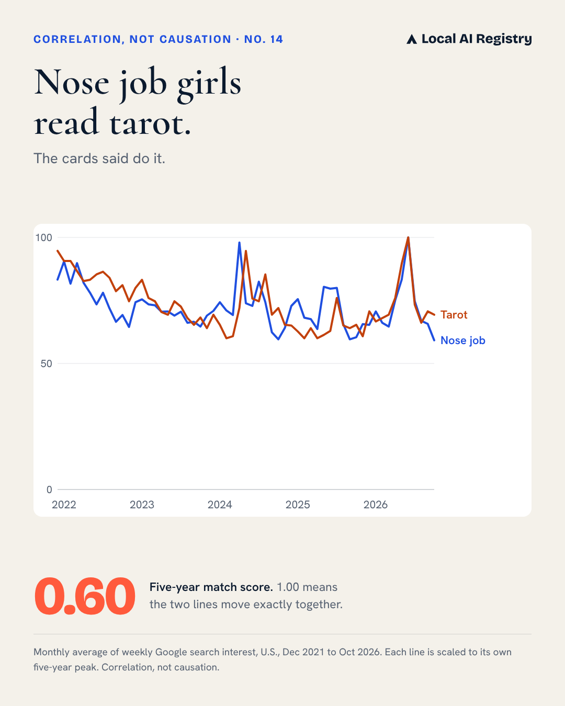
Correlation, Not Causation · No. 14
Caption
The cards have spoken. Nose job searches and tarot searches have tracked each other for five years (0.60 match). Pull the Star card, book the consult. Correlation, not causation.
What card would you pull today?
28 posts
Dating Correlations
State by state: where dating searches and beauty searches line up.
Dating Correlations · No. 01
Caption
Breakups and body contouring travel together. Across 49 states, the places that Google “divorce lawyer” the most also Google “liposuction” the most (match score 0.60). Connecticut and Georgia sit near the top of both. Does a divorce make you want lipo? We have no idea. Search data, not science.
Which state surprised you?
Dating Correlations · No. 02
Caption
Swipe, match, lift? States that search for the Hinge dating app the most also search for facelifts the most. With a match score of 0.76, it is the tightest pair we found. California and Nevada lead on both. South Dakota and Arkansas sit low on both. Correlation, not causation. Search data, not science.
Tag someone on Hinge.
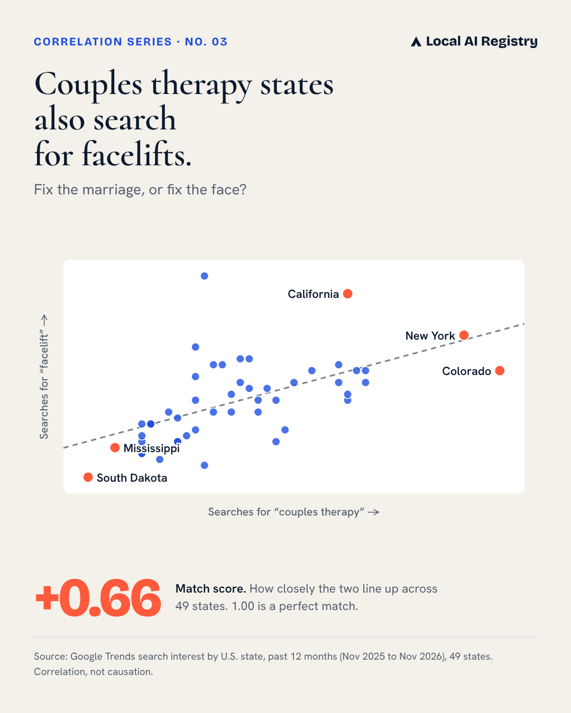
Dating Correlations · No. 03
Caption
Some states work on the relationship. Some work on the jawline. A lot of them do both. Across 49 states, searches for “couples therapy” and “facelift” line up closely (match score 0.66). New York ranks high on both. Search data, not science.
Which one would you book first?
Dating Correlations · No. 04
Caption
One of the strongest pairs in the series (match score 0.69). The states that search for the Plan B pill the most also search for tummy tucks the most. Mississippi, Texas and Louisiana top both lists. Vermont and New Hampshire sit low on both. Does one lead to the other? No idea. Correlation, not causation. Search data, not science.
Dating Correlations · No. 05
Caption
Planning ahead, in more ways than one. The states that search for condoms the most also search for tummy tucks the most (match score 0.66), and for liposuction too (0.50). Mississippi and Alabama rank high on both. Montana and New Hampshire rank low. Search data, not science.
Send this to your most prepared friend.
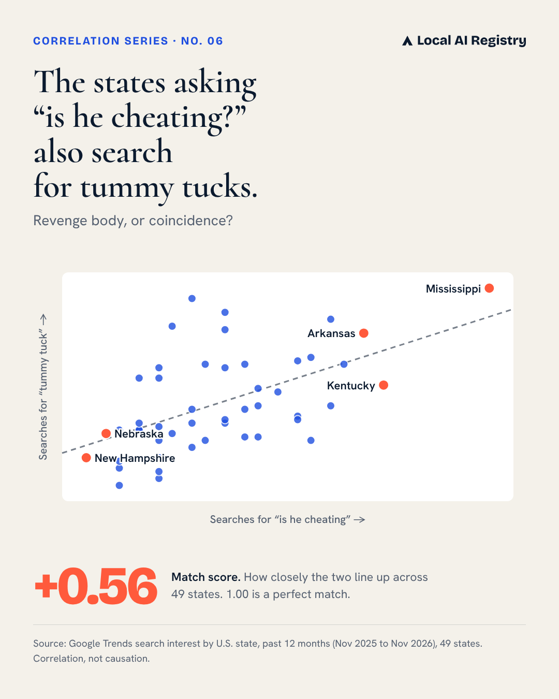
Dating Correlations · No. 06
Caption
Suspicion and surgery. States where people search “is he cheating” the most also search “tummy tuck” the most (match score 0.56). Mississippi tops both lists. New Hampshire and Nebraska ask the least. Is it a revenge body plan? Search data can't tell you that. Correlation, not causation.
What would you do first?
Dating Correlations · No. 07
Caption
Here's one that runs the other way. The more a state searches for Tinder, the less it searches for tummy tucks (match score −0.58). Alaska, Maine and Montana swipe the most and tuck the least. Mississippi and Georgia do the opposite. Hinge states, meanwhile, love a facelift. Search data, not science.
Tinder or Hinge?
Dating Correlations · No. 08
Caption
Two very different kinds of procedure. The states that search for vasectomies the most search for facelifts the least (match score −0.57). Idaho, Utah and Montana lead on vasectomies. Florida, California and New York lead on facelifts. Correlation, not causation. Search data, not science.
Tag your state.
Dating Correlations · No. 09
Caption
Smile, you've got a date. States that search for first date ideas the most also search for teeth whitening the most (match score 0.52). Bumble searches follow the same pattern (also 0.52). Utah and Rhode Island are big on date planning. Kansas searches teeth whitening more than any other state. Search data, not science.
Best first date you ever had?
Dating Correlations · No. 10
Caption
The more a state searches for bachelorette parties, the less it searches for tummy tucks (match score −0.51). Iowa, Illinois and South Dakota plan the parties. Mississippi and Texas plan the tucks. Correlation, not causation. Search data, not science.
Who's planning a bachelorette right now?
Dating Correlations · No. 11
Caption
Shopping for the holidays? The search data has opinions. For every 100 “gifts for girlfriend” searches in December, about 7 were for jewelry. Wives were the top lingerie searches. Moms got the most spa day searches of anyone. Husbands and boyfriends? Basically never a spa day: 30 and 10 searches all month. Search data, not science.
Who's getting a spa day from you this year?
Dating Correlations · No. 12
Caption
Who's still shopping on December 24th? On Christmas Eve, searches for “gift for wife” ran 2.4 to 2.8 times searches for “gift for husband,” two years in a row. Gifts for her climb right up to the last minute. Gifts for him barely move. Search data, not science.
Tag the last-minute shopper in your life.
Dating Correlations · No. 13
Caption
New car, new face? States that search for Tesla the most also search for facelifts the most (match score 0.83, one of the strongest in the series). Tesla states also lean toward Botox (0.54) and med spa searches (0.55). California, Florida and Nevada top the chart. Search data, not science.
Would you rather: Tesla or a facelift?
Dating Correlations · No. 14
Caption
Timeless, in more ways than one. States that search for Rolex the most also search for facelifts the most (match score 0.82) and for liposuction (0.76). Florida, New York and California lead. West Virginia and South Dakota sit low on both. Correlation, not causation. Search data, not science.
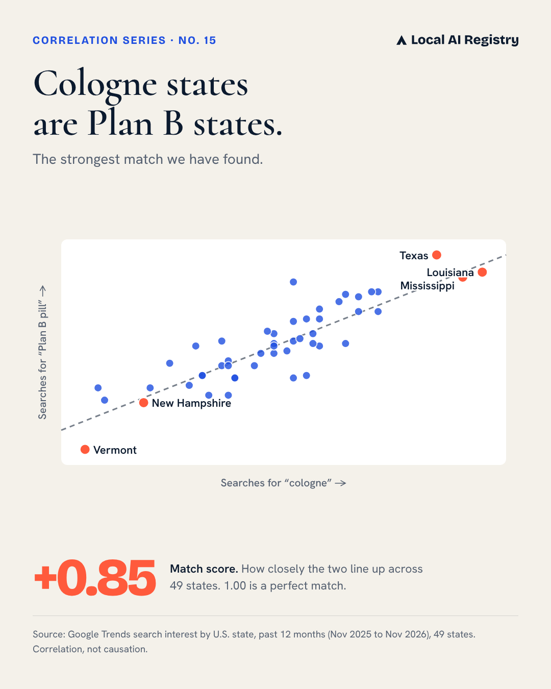
Dating Correlations · No. 15
Caption
Our strongest match yet (0.85). States that search for cologne the most also search for the Plan B pill the most. Louisiana, Texas and Mississippi top both lists. New Hampshire and Vermont sit at the bottom of both. We are not saying cologne works. We are just saying. Search data, not science.
Dating Correlations · No. 16
Caption
Cologne or Tinder, pick one. The more a state searches for cologne, the less it searches for Tinder (match score −0.76). Mississippi and Louisiana go heavy on cologne. Vermont and Montana go heavy on Tinder. Search data, not science.
Team cologne or team swipe?
Dating Correlations · No. 17
Caption
States that search “sushi near me” the most also search for facelifts the most (match score 0.80). Florida, California and Hawaii lead on both. The Dakotas sit low on both. Correlation, not causation. Search data, not science.
Best sushi date spot near you?
Dating Correlations · No. 18
Caption
When you only get three minutes, apparently the nose matters. States that search for speed dating the most also search for nose jobs the most (match score 0.69). Rhode Island, New York and California lead. Search data, not science.
Would you ever try speed dating?
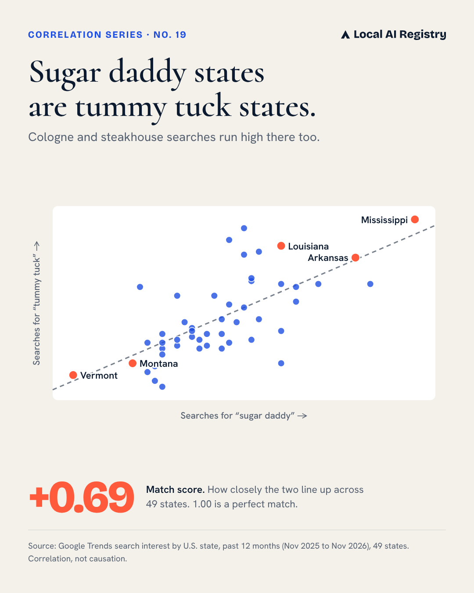
Dating Correlations · No. 19
Caption
Follow the money. States that search “sugar daddy” the most also search for tummy tucks the most (match score 0.69). They also search more for cologne (0.59) and steakhouses (0.56). Mississippi, Arkansas and Louisiana lead. Vermont and Montana sit low. Search data, not science.
Dating Correlations · No. 20
Caption
Old school wins. The more a state searches “steakhouse near me,” the less it searches for Tinder (match score −0.64). Mississippi and Georgia book the steak. Alaska and Vermont swipe. Search data, not science.
Steak dinner or app date?
Dating Correlations · No. 21
Caption
Embrace the belly. The more a state searches for beer, the less it searches for tummy tucks (match score −0.64). Vermont and Maine search beer. Mississippi and Louisiana search tummy tucks. Correlation, not causation. Search data, not science.
Tag your beer buddy.
Dating Correlations · No. 22
Caption
States that search for thongs the most also search for nose jobs the most (match score 0.55). California, New York and Florida lead on both. Mississippi and Iowa sit low on both. Search data, not science.
No comment needed.
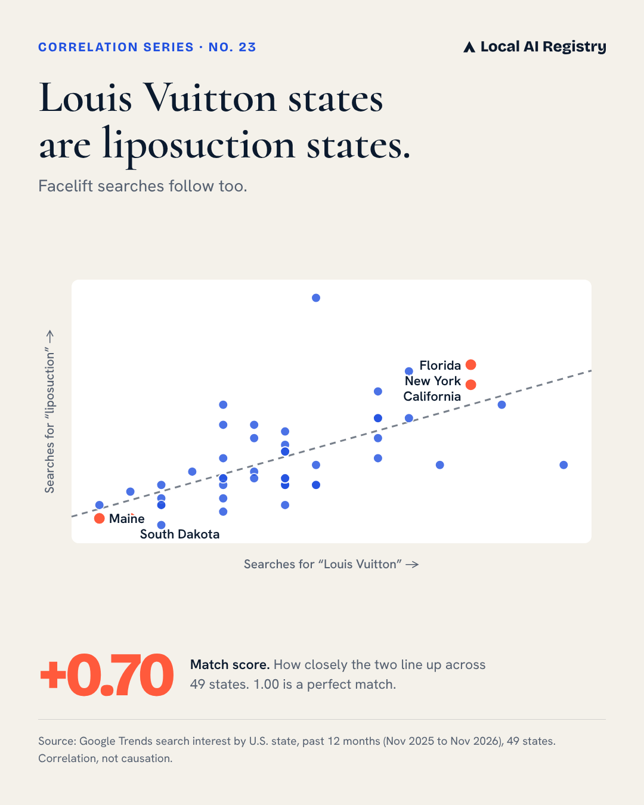
Dating Correlations · No. 23
Caption
Designer bag, designer body. States that search for Louis Vuitton the most also search for liposuction the most (match score 0.70) and for facelifts (0.69). Florida, New York and California lead. South Dakota and Maine sit low on both. Search data, not science.
Dating Correlations · No. 24
Caption
Draft day beats surgery day. The more a state searches for fantasy football, the less it searches for tummy tucks (match score −0.62). Minnesota and Massachusetts set lineups. Mississippi and Alabama search tummy tucks. Search data, not science.
Tag your league's last-place finisher.
Dating Correlations · No. 25
Caption
It depends what you call it. States that search the casual term “boob job” the most also search for vasectomies the most (match score 0.58). Idaho, Utah and Alaska lead. Real Housewives states go the other way (−0.62). New Jersey and New York search “boob job” the least. Search data, not science.
Dating Correlations · No. 26
Caption
The more a state searches for Taylor Swift, the less it searches for the Plan B pill (match score −0.58). Rhode Island and Maine love Taylor. Mississippi and Louisiana search Plan B more. Correlation, not causation. Search data, not science.
Which era are you in?
Dating Correlations · No. 27
Caption
The more a state searches for Match.com, the less it searches for cologne (match score −0.64). Vermont and Maine go for Match.com. Mississippi and Louisiana go for cologne. Match.com states also search Bumble more (0.55). Search data, not science.
What's the best dating app right now?
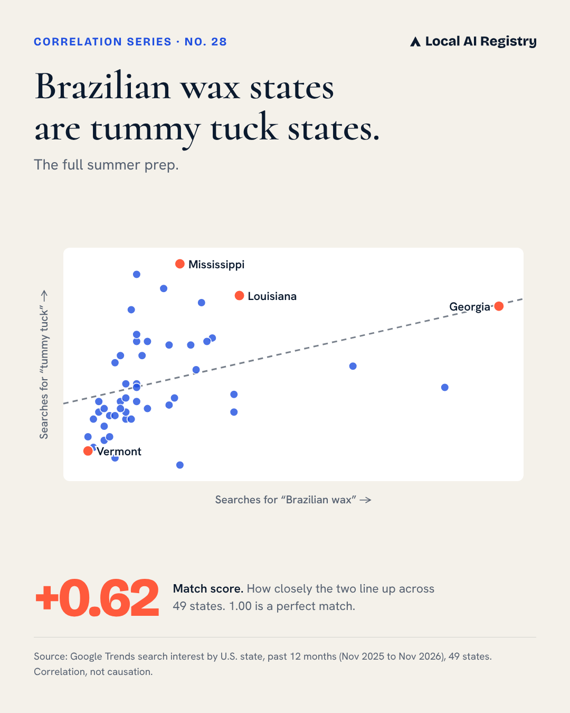
Dating Correlations · No. 28
Caption
States that search for Brazilian waxes the most also search for tummy tucks the most (match score 0.62). Georgia, Louisiana and Mississippi lead. Maine and Vermont sit low on both. Search data, not science.
Tag your summer-ready friend.
8 posts
Before the Date
What she searches about him, and what he searches about her.
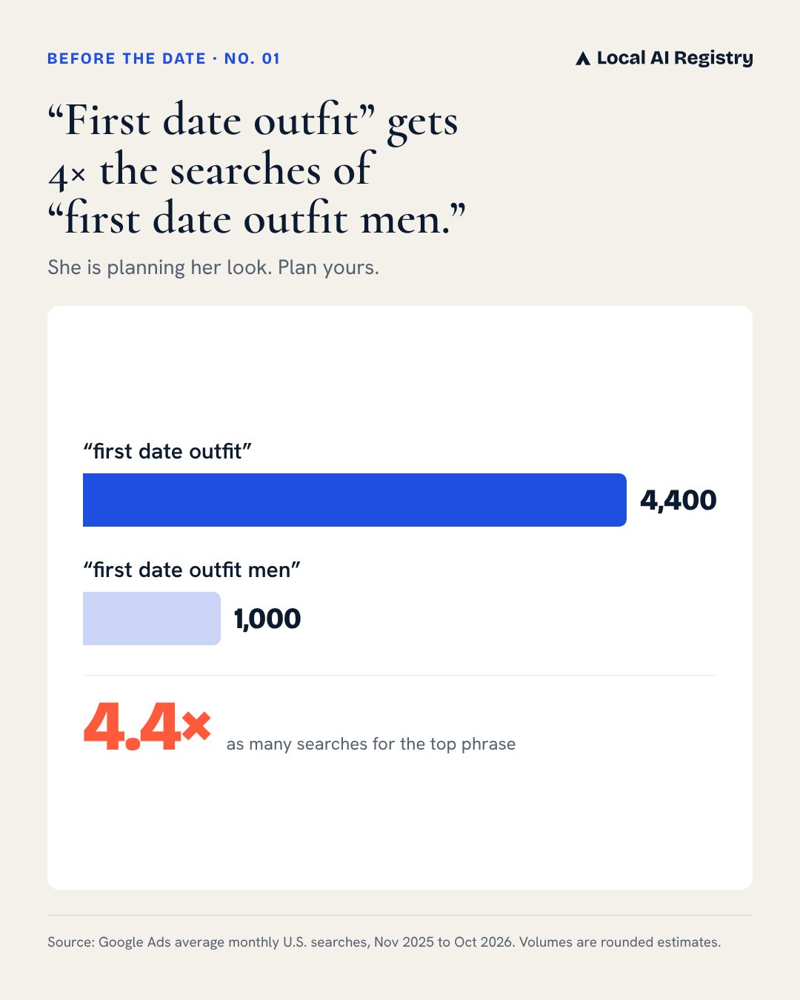
Before the Date · No. 01
Caption
She already knows what she's wearing. “First date outfit” gets about 4,400 searches a month. “First date outfit men” gets about 1,000. Guys: a clean fit and a fresh haircut go a long way. Search data, not science.
What's your go-to first date fit?
Before the Date · No. 02
Caption
Before the date, she's doing her homework. “Red flags in a man” gets about 8,100 searches a month, more than 4 times “red flags in a woman” (about 1,900). Show up on time, put the phone away, be kind to the server. Search data, not science.
Biggest first date red flag? Go.
Before the Date · No. 03
Caption
Mixed signals are exhausting. “How to get him to commit” gets about 260 searches a month. “How to get her to commit”? About 10. If you know what you want, saying it out loud is the move. Search data, not science.
Tag someone who needs to hear this.
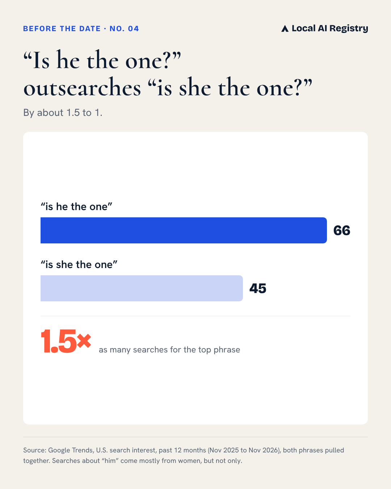
Before the Date · No. 04
Caption
She's thinking long term. Searches for “is he the one” run about 1.5 times “is she the one” in Google Trends over the past year. Guys: consistency is what answers that question. Search data, not science.
When did you know?
Before the Date · No. 05
Caption
Overthinking is universal. “Does he like me” runs about 1.3 times “does she like me” in Google Trends over the past year. So yes, she's wondering too. Text back. Make the plan. Search data, not science.
Double text: yes or no?
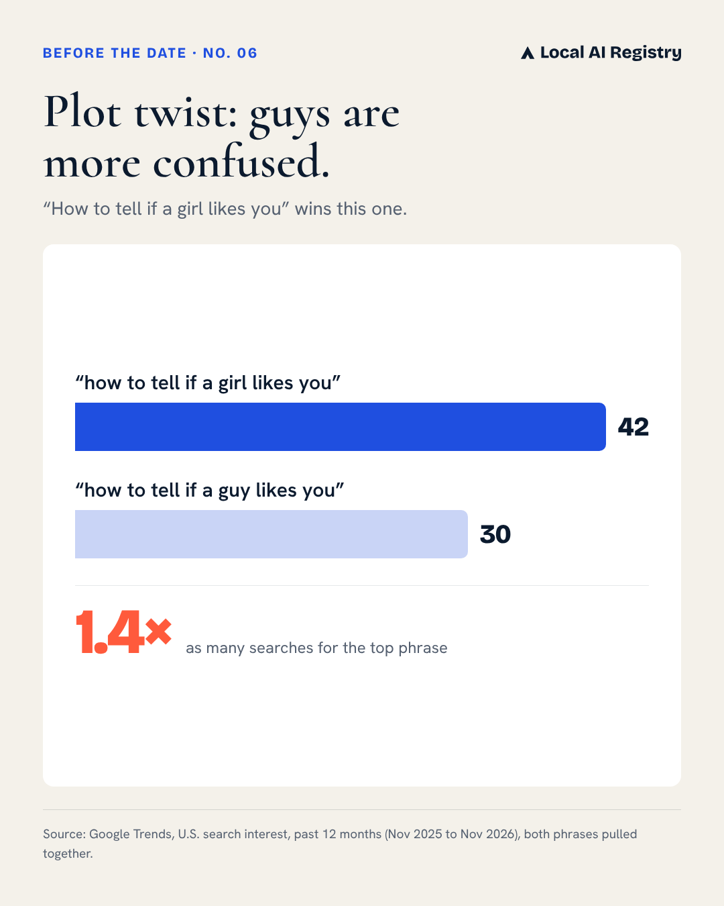
Before the Date · No. 06
Caption
Guys, you're not alone. “How to tell if a girl likes you” gets about 1.4 times the searches of “how to tell if a guy likes you” in Google Trends over the past year. Easiest way to find out? Ask her out. Search data, not science.
Tag the friend who overthinks everything.
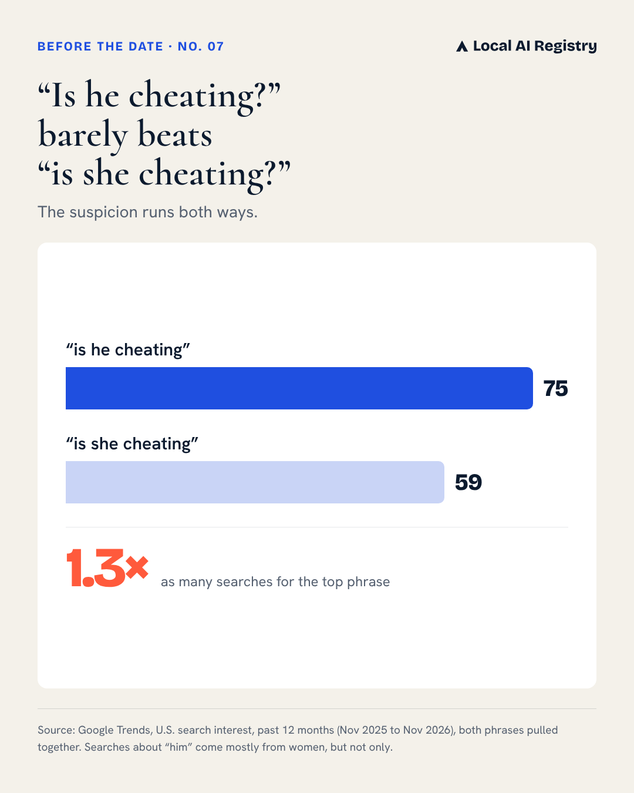
Before the Date · No. 07
Caption
Trust issues are not just a her thing. “Is he cheating” runs only about 1.3 times “is she cheating” in Google Trends over the past year. Be the person nobody has to Google about. Search data, not science.
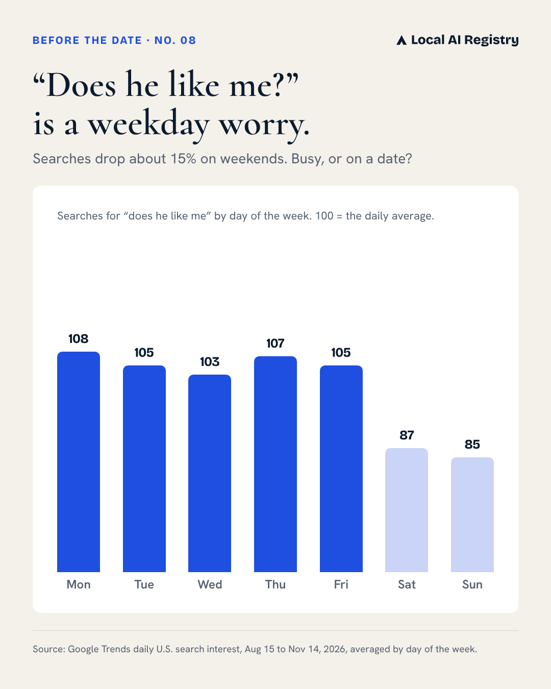
Before the Date · No. 08
Caption
Overthinking runs Monday to Friday. Searches for “does he like me” sit about 5% to 8% above average on weekdays and drop about 15% below on Saturdays and Sundays. Maybe that's when the dates happen. Guys: a midweek text goes further than you think. Search data, not science.
What day do you overthink the most?
Every number comes from saved Google Trends and Google Ads pulls (Nov 2021 to Nov 2026). Google does not say who searched. The Correlation, Not Causation posts are jokes on purpose: each pair matches more closely than our control searches (like “mattress”) do, but none of them cause each other.
AI is changing every day. Local AI Registry's dedicated local AI research team keeps testing to find what works best.